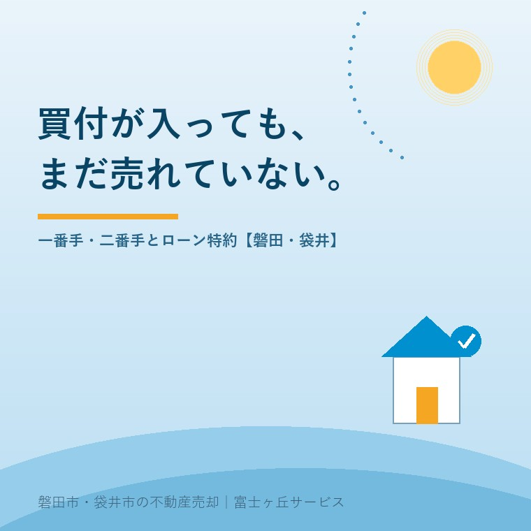

2026年8月16日｜カテゴリ：売却実務／契約と交渉

この記事の要点
Q. 実家に買付が入りました、と連絡をもらいました。しかも二組。「一番手・二番手」と言われたのですが、これは早く出したほうが優先なんですか。それと、契約してもローンで白紙に戻ることがあると聞いて不安です。
A. 買付の順番に、法律上の意味はありません。誰を一番手にするかを決めるのは、売主であるあなたです。買付証明書（購入申込書）は法律に定めのない業界慣行の書面で、原則として法的拘束力はなく、買主は撤回できます。だから、金額の高さだけで選ぶと、後で戻ってくることがあります。見るべきは、①価格 ②資金の出どころ（現金か住宅ローンか、事前審査は通っているか） ③引渡し時期 ④特約や条件の数の4つです。そして「白紙に戻る」ほうの話。宅建業法35条1項12号は、金銭の貸借のあっせんの内容と、そのあっせんに係る金銭の貸借が成立しないときの措置を、重要事項として説明することを義務づけています。これがローン特約です。期限までに融資の承認が得られなければ、契約は白紙に戻り、手付金は買主に返還されるのが通常の定めです。これは、買主が気持ちを変えて手付を放棄する手付解除（民法557条）とはまったく別の仕組みです。売主が守るべきは、期限の日付を自分でも把握しておくこと。それだけで、二週間の見え方が変わります。磐田市・袋井市では、地域密着の会社に相談するという選択肢があります。
売り出してしばらく経って、担当者から電話が入ります。「買付が入りました」。
売主にとって、いちばん嬉しい連絡です。長かった。これで決まる。──そう思われるのは当然です。
ただ、この時点ではまだ何も決まっていません。ここから契約までに、だいたい一週間から二週間。そして契約から決済まで、さらに一か月ほど。その間に消えていく話が、実際にあります。
今日は、この「買付から契約までの二週間」を、売主の側から分解します。何が根拠のある話で、何が慣行なのか。制度は2026年8月16日時点で国土交通省・法務省が公表している内容に沿って書きます。
まず、この書面の正体から。
買付証明書（購入申込書、買受証明書とも呼ばれます）は、買主が「この条件で買いたい」という意思を書面で示すものです。記載されるのは、購入価格、手付金の額、引渡し希望時期、住宅ローンを使うかどうか、有効期限などです。
ここが大事なところです。この書面は、法律に定めがありません。宅地建物取引業法にも民法にも「買付証明書」という条文はない。業界の慣行として使われている書面であり、原則として法的拘束力はないと理解されています。
| 買付証明書 | 売買契約書 | |
|---|---|---|
| 法律上の位置づけ | 法律に定めなし。業界慣行 | 民法上の売買契約。宅建業法37条の書面 |
| 拘束力 | 原則としてなし | あり |
| 撤回 | 買主の意思で可能 | 手付解除・特約による解除など、決まった方法でのみ |
| お金の授受 | 原則なし（申込証拠金を預かる場合はある） | 手付金を授受する |
つまり、買付証明書は「約束」ではなく「意思表示」です。売主としては、期待しすぎず、しかし軽んじすぎず、という距離で受け取るのが正解です。
買付が複数入ると、「一番手」「二番手」という言葉が出てきます。この順位について、はっきり書きます。
提出の早い順に交渉しなければならない、という法律上の決まりはありません。実務では先に出した人を優先する慣習がありますが、それは慣習であって義務ではない。誰と話を進めるかを決めるのは、売主です。
では、何を見て決めるか。私たちが売主にお見せする比較表は、この4項目です。
| 見る項目 | 強い条件 | 弱い条件 |
|---|---|---|
| ① 価格 | 満額、または指値が小さい | 大きな指値が入っている |
| ② 資金 | 現金、または住宅ローンの事前審査を通過済み | 「これから銀行に相談します」 |
| ③ 引渡し時期 | 売主の希望に合う | 「今の家が売れたら」など、他の取引に連動している |
| ④ 条件・特約 | 少ない、明確 | 解体・測量・設備交換などの要求が多い |
実家の売却で最も差が出るのは、②です。100万円高い買付でも、資金の裏づけがなければ、二週間後に消えることがあります。逆に、指値は入っているが事前審査を通過している買主のほうが、結果的に確実に決まる。
指値そのものへの向き合い方は値引きと指値の記事に整理しました。「いくら下がるか」より「本当に決まるか」を見るのが、売主にとっての実利です。
ここも実務です。二番手の方には、「先に別の方とお話を進めています。もし進まなかった場合、あらためてご連絡してよろしいですか」と正直にお伝えします。
これを曖昧にすると、後で困るのは売主です。一番手が消えたときに、二番手がもう他の家を決めてしまっている。だから、二番手にも状況を伝えて、待っていただけるかを確認しておく。誠実に扱った買主は、戻ってきてくれます。
なお、売り出し中の物件情報がきちんと市場に出ているかどうかは、そもそもの前提です。レインズの公開状況と囲い込みの記事もあわせてご確認ください。買付が1件しか入らないのか、入る仕組みになっていないのかは、別の話です。
一番手が決まってからの流れを、日程で書きます。あくまで標準的な例です。
| 時期 | 起きること | 売主がすること |
|---|---|---|
| 1〜3日目 | 価格・引渡し時期・条件の詰め。買主が住宅ローンの事前審査へ | 条件の可否を返答する |
| 3〜7日目 | 事前審査の結果。仲介会社が調査（登記簿、公図、道路、上下水道、法令制限） | 権利証・図面・過去の書類を出す |
| 7〜12日目 | 重要事項説明書と売買契約書の作成。ローン特約の期限を決める | 特約の内容と期限を確認する |
| 10〜14日目 | 重要事項説明 → 売買契約 → 手付金の授受 | 署名押印、手付金の受領 |
| 契約後〜約1か月 | 買主が住宅ローンの本審査へ。承認が出れば決済へ | 引渡しの準備、残置物の処分 |
売主の作業として重いのは、3〜7日目の書類集めです。権利証、建物の図面、過去の測量図、増改築の記録、境界の確認書。実家の場合、これが揃っていないことのほうが多い。探す時間がそのまま契約の遅れになります。
何をどこから探すかは親の家の書類と名義の記事にまとめました。買付が入ってから探すのでは遅い。売り出す前に一度、揃えておいてください。
本題です。売主がいちばん気にすべきなのは、契約後に消える可能性です。
宅地建物取引業法35条1項12号は、宅地建物取引業者に対し、重要事項として次の説明を義務づけています。
代金または交換差金に関する金銭の貸借のあっせんの内容、および当該あっせんに係る金銭の貸借が成立しないときの措置
この「成立しないときの措置」にあたるのが、契約書に入れる融資利用の特約（ローン特約）です。買主が住宅ローンを使う取引では、ほぼ必ず入ります。
大事なのは、ローン特約は法律で自動的に付くものではなく、契約書に書いてはじめて効く条項だということです。書き方には主に2つの型があります。
| 型 | 仕組み | 売主にとっての違い |
|---|---|---|
| 解除条件型 | 期限までに融資の承認が得られなければ、契約は自動的に効力を失う | 買主の意思表示なしに白紙になる。期限の管理が特に重要 |
| 解除権留保型 | 融資が得られない場合、買主が解除の意思表示をして契約を解除する | 買主から連絡が来る。期限内に意思表示がなければ解除できなくなる定めが一般的 |
いずれの型でも、ローン特約により契約が解除・失効した場合、受け取った手付金は買主に返還するのが通常の定めです。売主は違約金を受け取れません。これが「白紙に戻る」という言葉の意味です。
不公平に感じられるかもしれませんが、この特約がなければ、買主は怖くて契約できません。結果として買主の数が減り、売れなくなる。だから、売主としては受け入れたうえで、次の3つを自分でも把握しておいてください。
期限を売主が知らないまま進むケースが、実際にあります。そして期限の翌日に「白紙になりました」と言われる。知っていれば、期限の一週間前に「審査はどうなっていますか」と確認できます。その一言で、動きが変わることがあります。
なお、金利の動きは審査の通りやすさにも影響します。売り出しの時期をどう考えるかは金利と売り出し時期の記事もご覧ください。
混同されやすいので、分けておきます。
民法557条は、買主が売主に手付を交付したときは、買主はその手付を放棄し、売主はその倍額を現実に提供して、契約の解除をすることができると定めています。ただし、その相手方が契約の履行に着手した後は、この限りでないとされています（令和2年4月1日施行の改正で、判例の考え方が条文に明記されました）。
| ローン特約による解除 | 手付解除（民法557条） | |
|---|---|---|
| 理由 | 融資が承認されなかった | 気が変わった。理由は問わない |
| 手付金 | 買主に返還される | 買主が放棄する（売主が解除するなら倍額を現実に提供） |
| 売主の手元 | 何も残らない | 手付金が残る |
| 期限 | 特約で定めた日 | 相手方が履行に着手するまで（契約書で期日を定めるのが一般的） |
同じ「解除」でも、売主の手元に残るものがまったく違います。だから、契約が解除されたと聞いたら、まず「どちらの解除ですか」と確認してください。
もう一点。宅地建物取引業法39条は、売主が宅地建物取引業者である場合、手付は代金の額の10分の2を超えてはならないと定めています。また同条により、その手付はいかなる性質のものであっても解約手付とみなされ、これに反する買主に不利な特約は無効とされます。
ただし、これは売主が業者の場合の規定です。ご実家の売却のように個人が売主の場合、この上限は適用されません。手付の額は当事者の合意で決まります。当社の実務では、売買代金の5〜10％程度で設定することが多いのですが、これは慣行であって決まりではありません。
手付が少なすぎると、買主にとって解除のハードルが下がります。売主としては、ここも交渉材料のひとつです。
この地域ならではの事情を書きます。
まず、買主の多くが住宅ローンを使います。磐田・袋井の住宅地は、地元の勤め先に通う30〜40代のご家族が主な買い手です。現金一括はまれで、ほとんどの取引にローン特約が付きます。
次に、敷地が広く、価格が読みにくい。150坪、200坪の実家は、金融機関の担保評価と売買価格が合わないことがあります。買主の返済能力に問題がなくても、物件のほうで評価が伸びず、希望額まで貸してもらえないということが起こる。これが白紙に戻る原因になります。
三つめ。再建築や道路の条件で、融資が付かないことがあります。接道が2メートル未満、私道の持分がない、市街化調整区域内である──こうした事情があると、金融機関が慎重になります。再建築不可と私道の記事と市街化調整区域の実家の記事に書いたとおりです。
だから私たちは、売り出す前に「この家にローンが付くか」を先に確かめます。付きにくいと分かっていれば、現金の買主に絞る、価格を調整する、事前に条件を整える──打つ手があります。買付が入ってから調べるのでは、二週間を無駄にします。
決済当日までの流れは決済当日のお金の記事にまとめています。
当社は、磐田市見付で介護施設を運営するところから不動産の仕事を始めました。ご相談は、親の施設入居や相続がきっかけであることがほとんどです。
そういうご家族にとって、売却は初めての経験です。買付が入ったと聞けば「売れた」と思われますし、白紙に戻れば「だまされた」と感じられます。どちらも、無理のない受け止め方です。
だから私たちは、買付が入った段階で、必ず紙を一枚お出しします。買主の資金の状況、ローン特約の期限、決済の予定日、そして「消える可能性がどれくらいあるか」。良い話も悪い話も、同じ紙に並べます。期待の管理まで含めて、仲介の仕事だと思っています。
私たちが目指しているのは「高く売る」だけではなく、「家族が困らない売却」です。価格の前に事実を整理する道具として、ふじがおか実家カルテを用意しています。
買付が入った日は、嬉しい日です。その気持ちは、そのまま持っていてください。
そのうえで、手帳に一つだけ日付を書いてください。ローン特約の期限です。その日を越えれば、この話はほぼ決まりです。越えるまでの二週間と一か月を、一緒に見ていきます。
ふじがおか実家カルテ｜売り出す前に、ローンが付くかを確かめます
買付が入る前に、決めておくことがあります。
住所をもとに、接道と再建築の可否、融資が付きにくくなる要因、想定される買主の層、揃えておくべき書類を整理し、次に何をすべきかを1枚にしてお出しします。作成料0円・入力約1分。申込みだけで売却依頼にはなりません。
本記事は2026年8月16日時点で国土交通省・法務省が公表している情報に基づく一般的な解説であり、個別の取引における買付の優先順位、契約条項の効力、解除の可否を判断するものではありません。ローン特約の型（解除条件型・解除権留保型）、期限、手付金の返還の要否は、実際に締結する売買契約書の条項によって決まります。契約書および重要事項説明書の記載を必ずご自身でご確認ください。買付証明書の取扱いは仲介会社により異なります。契約の解除や損害賠償に関するご相談は弁護士へ、登記手続きは司法書士へ、境界の確定は土地家屋調査士へ、譲渡所得税は税理士へ、住宅ローンの審査基準は各金融機関へ、それぞれご確認ください。個別のご相談は当社までどうぞ。

この記事を書いた人：大石浩之（宅地建物取引士）
磐田市・袋井市・森町で「介護×相続×空き家」に特化した不動産売却支援を行う富士ヶ丘サービスの代表取締役・宅地建物取引士。介護施設の運営から不動産事業を始めた経験をもとに、売主とご家族が困らない売却を一件ずつお手伝いしています。プロフィール
磐田市・袋井市・森町の実家じまい・相続空き家相談
固定資産税通知書だけでも相談できます
住所があいまいでも、通知書や写真から名義・道路・農地・残置物の確認順を整理します。カルテ申込またはLINEで状況を送ってください。
富士ヶ丘サービス株式会社／静岡県磐田市見付5789番地1／TEL:0538-31-3308／静岡県知事 (2) 第14083号／代表取締役・宅地建物取引士 大石 浩之